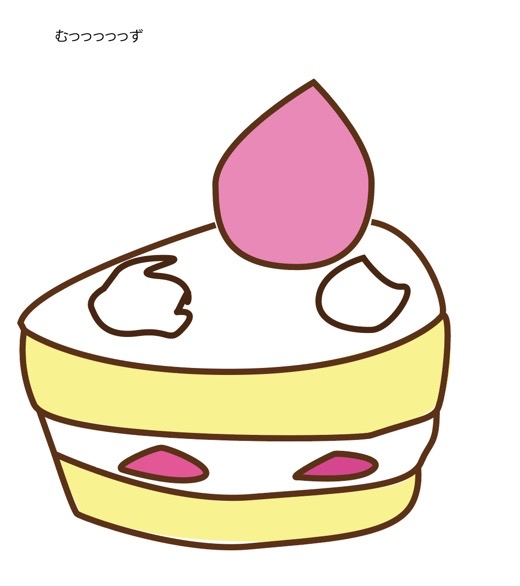
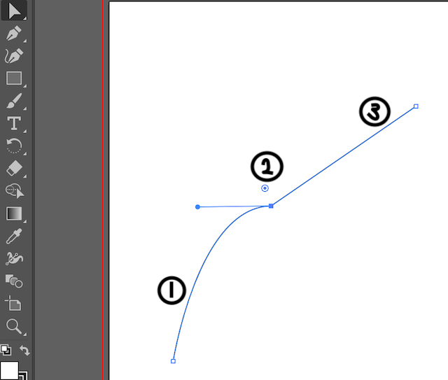

↑ Return to a preceding page.
↑ Return to a preceding page.
2020年5月活動
＜活動内容＞
adobe illustratorを用いた自作Tシャツ作り
＜活動目的＞
目的は２つ。
１つ目は、今後提案資料やプレゼンテーション資料を作る際に使うであろうイラストレーターの使い方を学ぶため。
２つ目は、前回のような "目的と手段が入れ替わってしまった活動"から得る学びではなく、自分の作りたいもの・やりたいものを通じて得る学びがしたくなったため。今回はTシャツのデザイン及び印刷を行う。
＜過程＞
adobe illustratorの使い方を学ぶため、adobe公式サイトの基本講座の中から、自分が必要と感じた講座（25講座）を受講した。
4日目

5日目

ペンツールを多用し、歯科衛生士の母にメッセージカードを書いた。
＜問題点＞
初日

ペンツールを使いこなせずクリーム部分がグチャグチャになってしまった。

原因としてはペンツールで①の線を書いた後にアンカーポイントを折らずに②の線を書いたため

①の線を書いた後、②をoptionキーを押しながらクリックしアンカーポイントを折ったのちに、③の線を書くと上手いこといくことがわかった。
＜結果＞
出来上がったデザイン

＜改善点＞
曲線が上手く書けない際に、シェイプ形成ツールを使うなど機転を利かせられるように練習する。
＜今後の活動＞
ある程度納得のいくデザインができたのでTシャツのプリント方法などを学び、実際にプリントをおこなう。拝見したところ矢田優大さんもTシャツ制作を行っていらっしゃるので、参考にさせていただく。